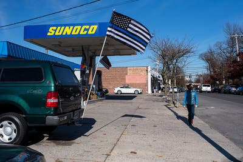

World News
Saudi Arabia and Human Rights Activists Fight Over Its Image at G20
As Pompeo Prepares to Meet Afghan Warring Parties, Kabul Is Attacked
A Man With a Van Is Challenging U.K. Drug Policy
U.S. News
For California Governor the Coronavirus Message Is Do as I Say, Not as I Dine
Many G.O.P. Governors Avoid Stating Plainly That Biden Won
To Protect Her Parents, She’s Keeping Her Daughter Out of School
Politics
Georgia and Michigan Deliver Blows to Trump’s Efforts to Undo the Election
Business and World Leaders Move On as Trump Fights to Reverse Election
Which States Have Certified Presidential Vote Totals
New York

What Happened When a School District Banned Thin Blue Line Flags
When New York City Schools Reopen, About 700,000 Students Won’t Be There
Spate of Violent Subway Attacks Unnerves Riders in N.Y.C.
Business
How One Airline’s Pandemic Hurt Becomes Everyone’s Pain
How Steve Bannon and a Chinese Billionaire Created a Right-Wing Coronavirus Media Sensation
Business and World Leaders Move On as Trump Fights to Reverse Election
Technology
The Best Video Games to Get Lost In This Holiday Season
How an Online Attack ‘Brought Twitter to Its Knees’
How Steve Bannon and a Chinese Billionaire Created a Right-Wing Coronavirus Media Sensation
Science
Designed to Deceive: Do These People Look Real to You?
Signs of Recent Volcanic Eruption on Mars Hint at Habitats for Life
When Sharks Turned Up at Their Beach, They Called in Drones
Sports
Georgia and Michigan Deliver Blows to Trump’s Efforts to Undo the Election
Business and World Leaders Move On as Trump Fights to Reverse Election
Which States Have Certified Presidential Vote Totals
Obituaries
What Happened When a School District Banned Thin Blue Line Flags
When New York City Schools Reopen, About 700,000 Students Won’t Be There
Spate of Violent Subway Attacks Unnerves Riders in N.Y.C.
The Upshot
How One Airline’s Pandemic Hurt Becomes Everyone’s Pain
How Steve Bannon and a Chinese Billionaire Created a Right-Wing Coronavirus Media Sensation
Business and World Leaders Move On as Trump Fights to Reverse Election